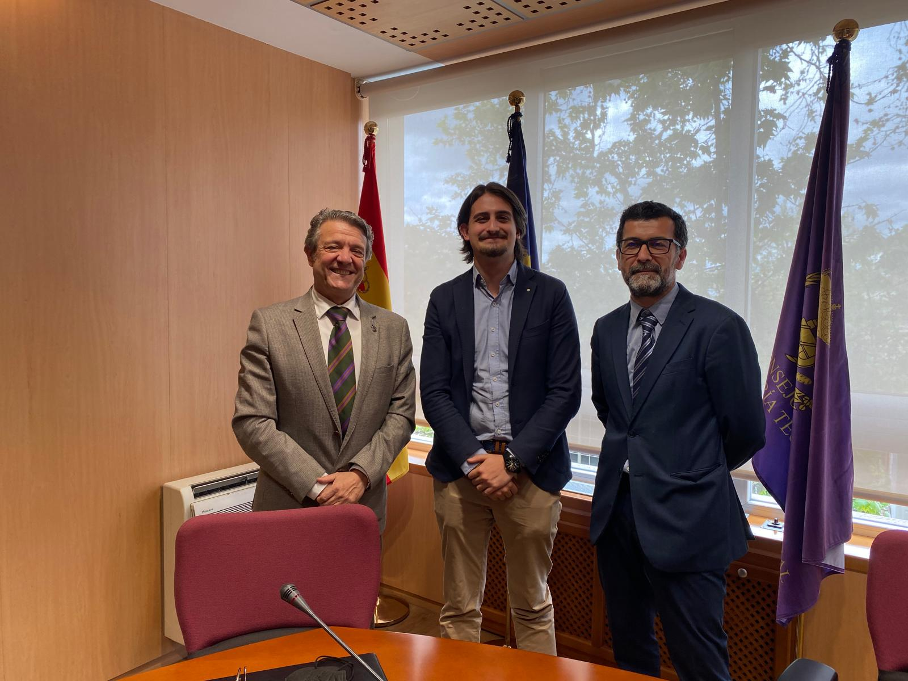
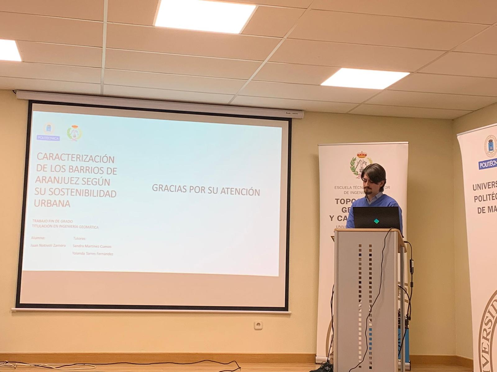
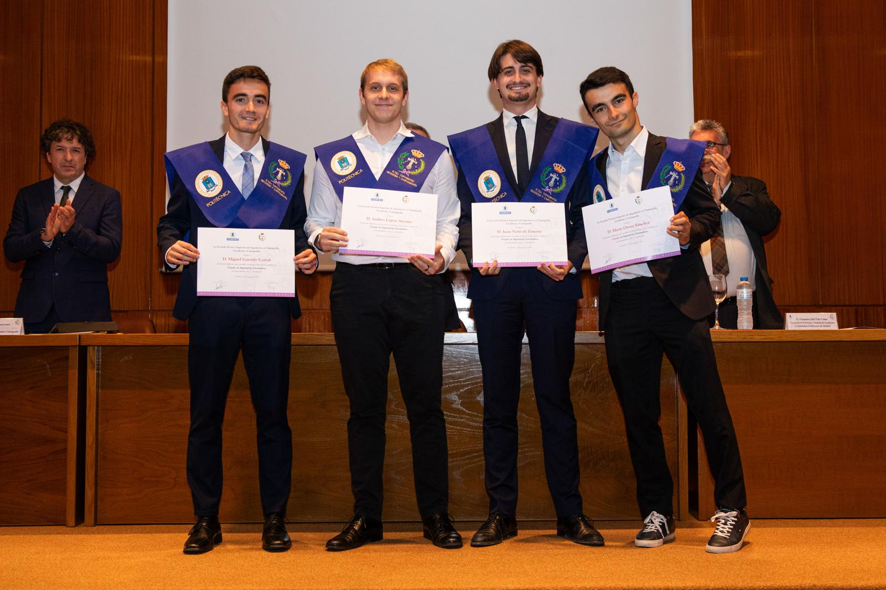
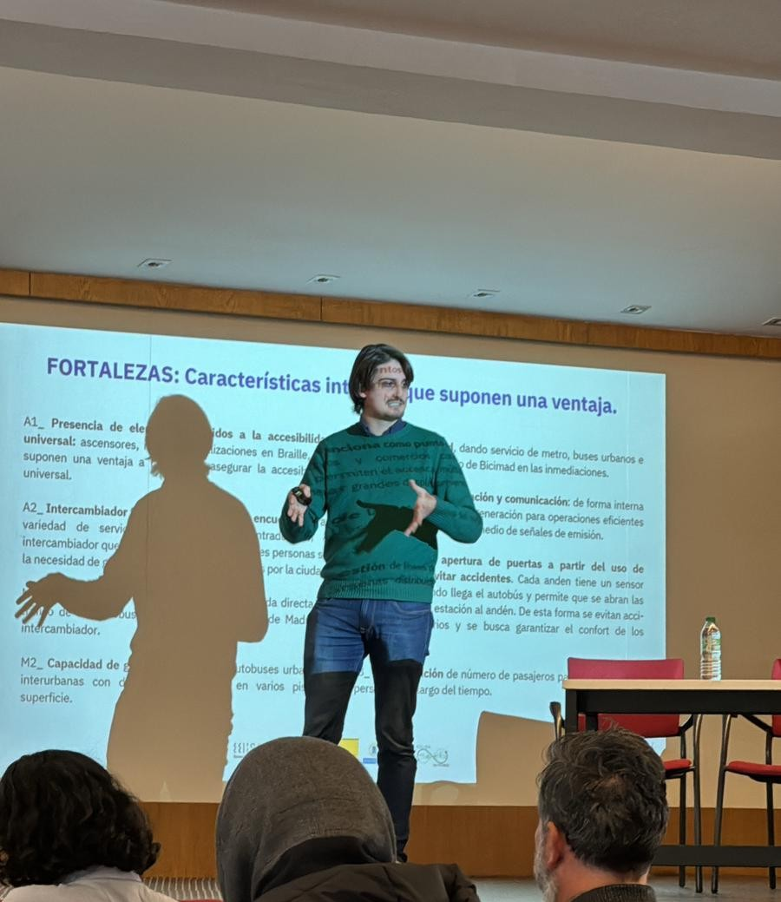
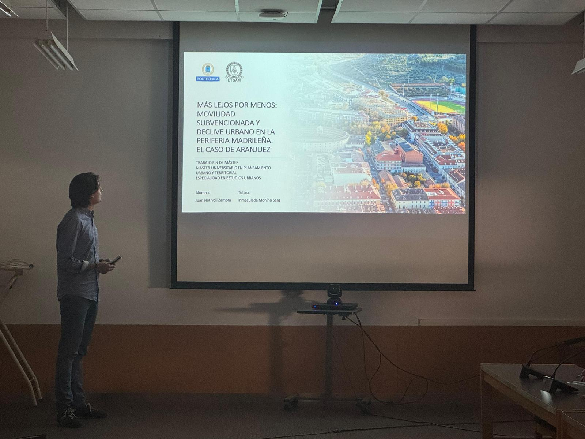
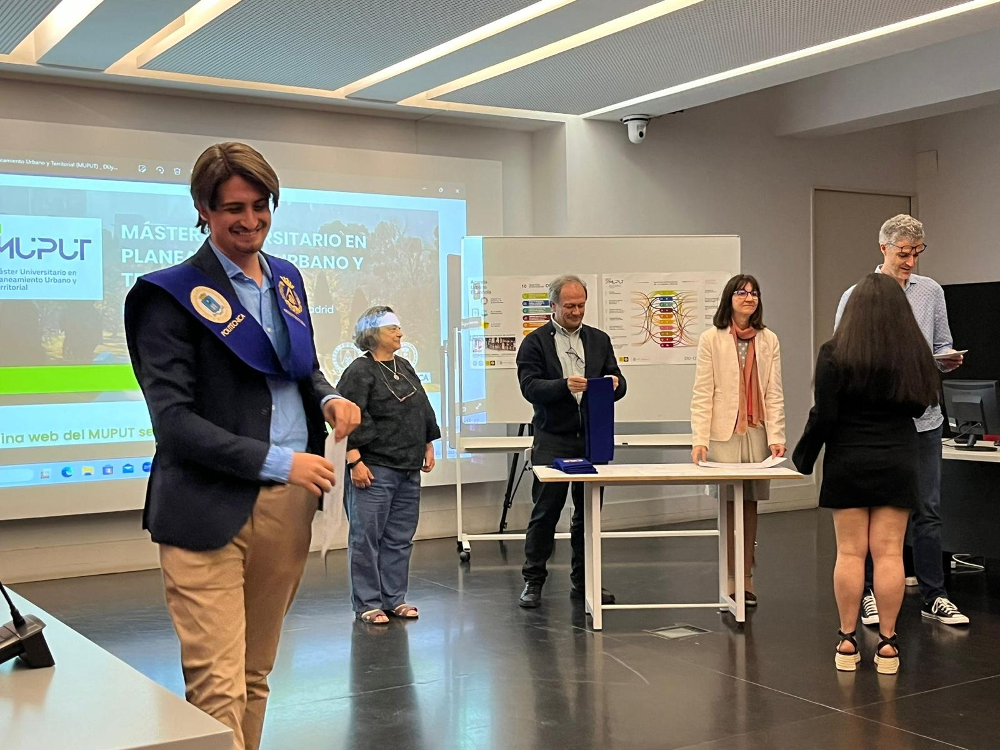
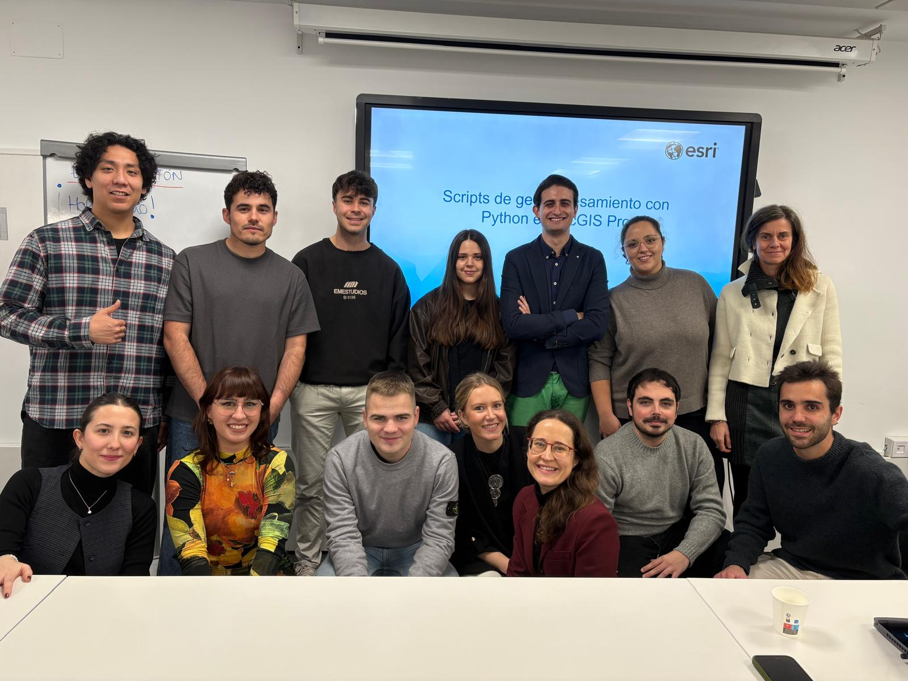
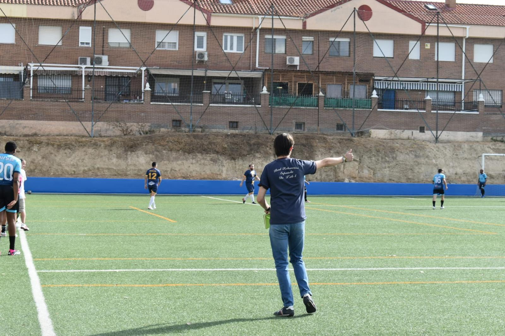
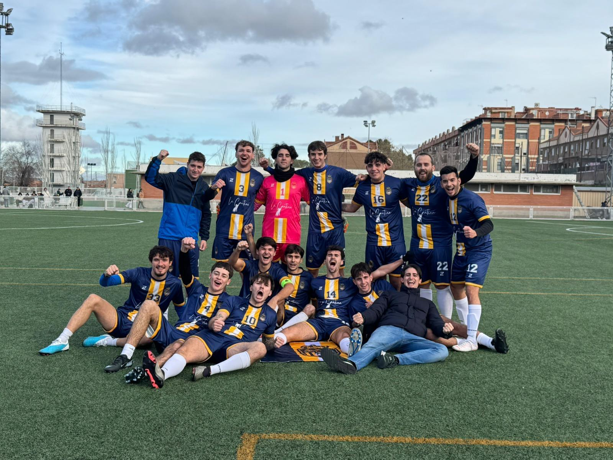
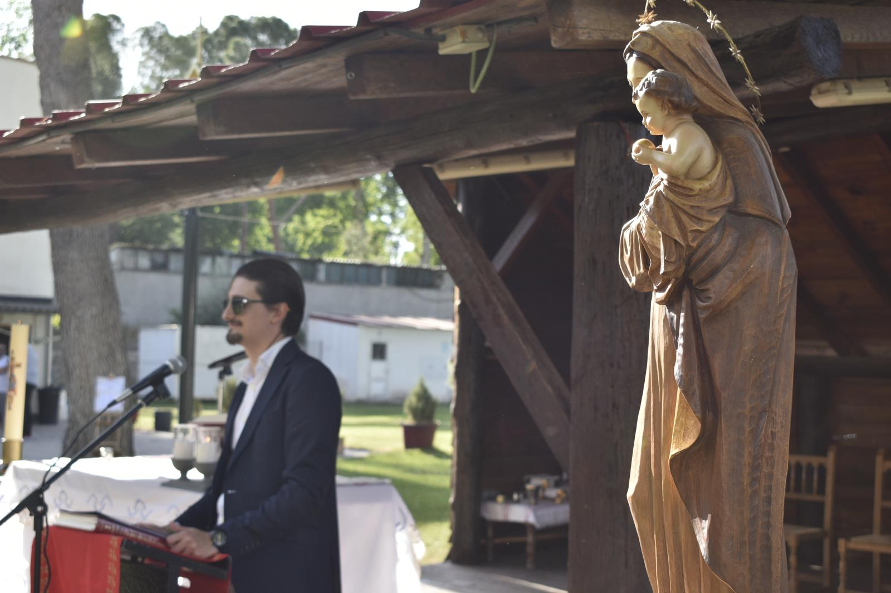

JUAN NOTIVOLI
TÉCNICO GIS // INGENIERO EN GEOMÁTICA
ARANJUEZ
MADRID
GIS
URBANISMO
TIEMPO LIBRE

Graduado en Ingeniería Geomática y Máster en Planeamiento Urbano y Territorial por la Universidad Politécnica de Madrid. Interés destacado en Urbanismo, Ordenación del Territorio, Catastro y Sistemas de Información Geográfica (SIG). Capacidad de aprendizaje, adaptación y aplicación de conocimientos técnicos en entornos profesionales. Experiencia en análisis territorial, gestión de datos espaciales y elaboración de informes técnicos.
Plataforma Integral de Agricultura usando el paquete ArcGIS y análisis espacial avanzado
Estudios del impacto de las subvenciones del transporte público en Madrid y su periferia
Caracterización de los barrios de Aranjuez basada en indicadores de sostenibilidad
Apoyo al Mapa Nacional de Suelo Industrial con análisis GIS y estudio legislativo
Propuesta ganadora de wayfinding mediante color y formas para el Intercambiador de Moncloa











